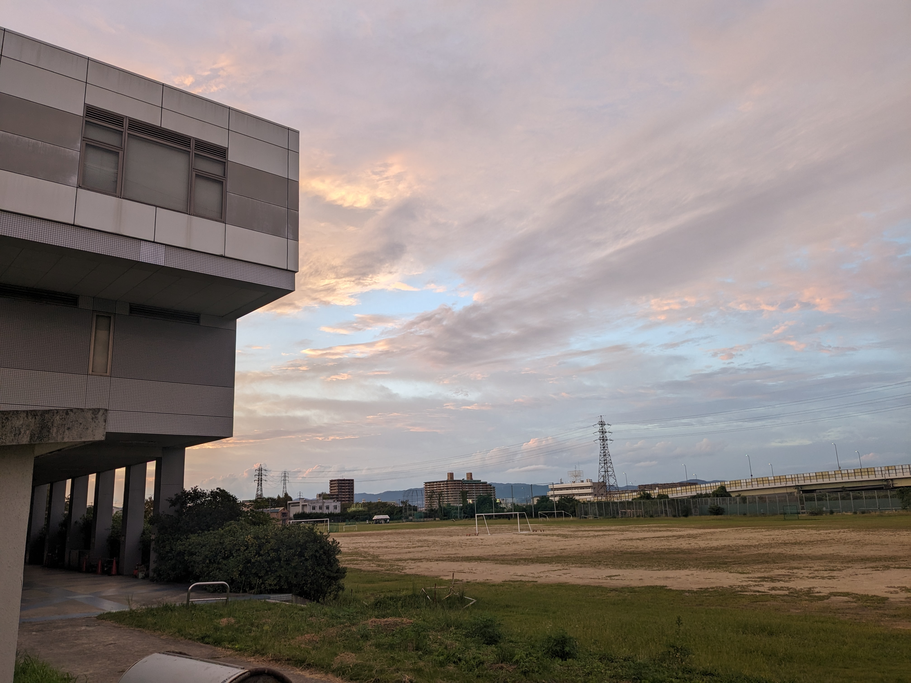

公大高専 エネルギー機械コースの学び
大阪府立大学工業高等専門学校から大阪公立大学工業高等専門学校に2022年4月に名前が変わると同時に教育カリキュラムが見直され、現在ある専門コースの一つがこの「エネルギー機械コース」です。
このサイトでは、エネルギー機械コースの「学び」の紹介をしています。

教育概要
より良い暮らしと環境との共生に向けてエネルギー機械コース（通称Mコース）では、
- 輸送機械や発電所等の産業インフラの設計と運用に必要な技術
- 水素エネルギー等のクリーンエネルギーの創生と貯蔵に関する技術
- 自然災害の予測分析や対策に関する技術
これらを教育課程の特色とし、人のより良い暮らしと環境との共生を実現する技術者の育成を目指します。
- 市販のカレールー（中辛）... 1/2箱
- 鶏肉 ... 400g
- 玉ねぎ ... 3個（中サイズ）
- にんにく ... 1片
- にんじん ... 1本
- 水 ... 700ml
- サラダ油 ... 大さじ1
-
ガラムマサラ
... 適量
作り方
- (材料をカットする)
玉ねぎを薄切りにし、にんにくをみじん切りにします。鶏肉は一口大に切ります。
- (炒める)
鍋にサラダ油を熱し、にんにくを炒めます。香りが立ったら玉ねぎを加え、飴色になるまで炒めます。
- (鶏肉を加える)
玉ねぎが飴色になったら、鶏肉を加えて炒めます。鶏肉の表面が白くなるまでしっかりと炒めます。
- (水を加える)
鶏肉の色が変わったら、水を加えて沸騰させます。沸騰したらアクを取り除きます。
- (煮込む)
カレールーを割り入れ、弱火で煮込みます。時々かき混ぜながら、ルーが完全に溶けるまで煮込みます。
- (仕上げ)
ガラムマサラを適量加え、さらに5分ほど煮込んで香りを引き出します。
- (盛り付け)
できあがったカレーをお皿に盛り、ご飯やナンと一緒にお楽しみください。